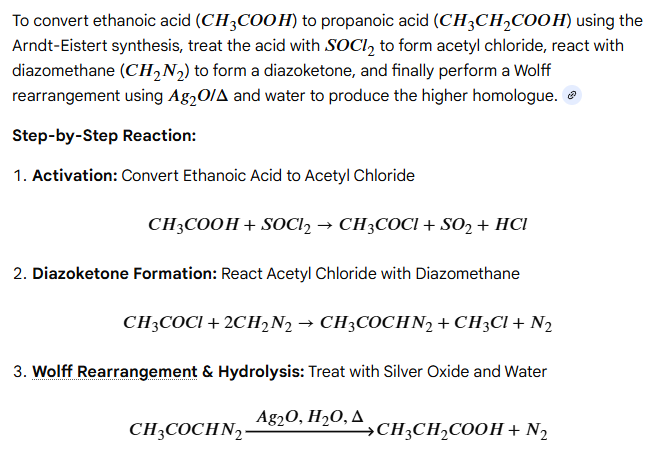
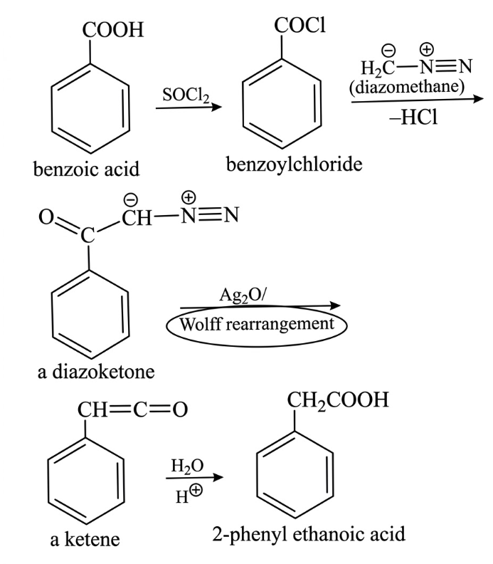
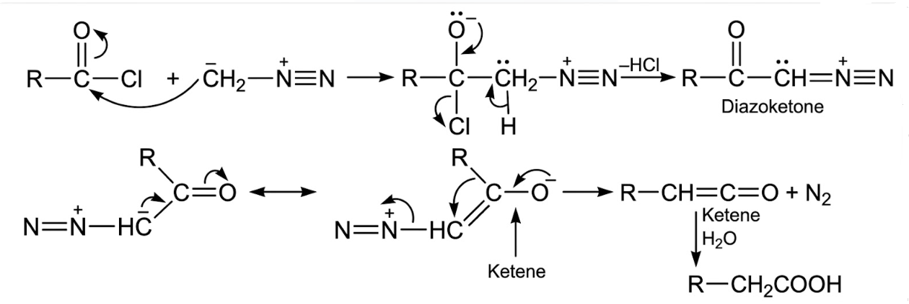

Definition
The Arndt–Eistert reaction is a method used to convert a
carboxylic acid into its homologous acid containing one extra carbon atom.
The reaction proceeds through formation of a diazoketone followed by
Wolff rearrangement.
General Reaction
Carboxylic acid is first converted to an acid chloride, which reacts with
diazomethane to form a diazoketone. On heating or photolysis, it undergoes
Wolff rearrangement to give the homologated acid.
Example
Ethanoic acid → Propanoic acid

Benzoic acid → Phenyl ethanoic acid

Acetic acid is converted to propionic acid by increasing the carbon chain
length by one carbon atom.
Mechanism
-
Formation of Acid Chloride
Carboxylic acid reacts with thionyl chloride (SOCl₂) to form an acid chloride.
-
Formation of Diazoketone
Acid chloride reacts with diazomethane (CH₂N₂) forming a diazoketone.
-
Wolff Rearrangement
Upon heating or UV light, nitrogen gas is released and rearrangement
produces a ketene intermediate.
-
Hydrolysis
Ketene reacts with water to give a carboxylic acid with one extra carbon atom.

Applications
- Used for chain extension of carboxylic acids.
- Important in synthesis of natural products.
- Used in preparation of higher homologous acids.
- Useful in pharmaceutical organic synthesis.
Limitations
- Diazomethane is highly toxic and explosive.
- Reaction requires careful handling.
- Not suitable for very complex functional groups.
- Sometimes gives side reactions.